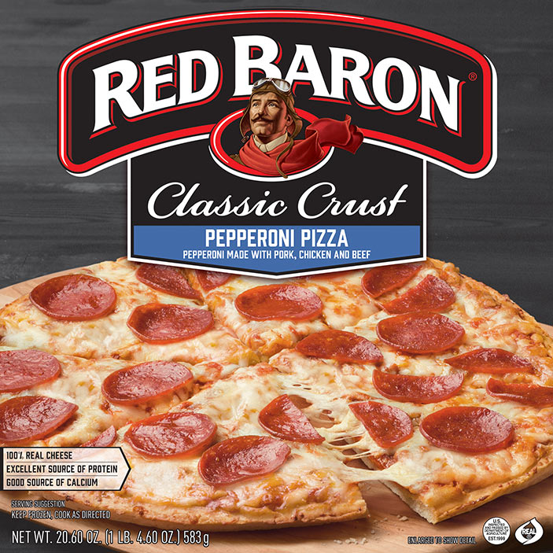

Frozen Pizza

Delicious and easy to make. Tastes about 90% as good as take-out pizza, but is about a quarter of the price. What a deal!
Ingredients
- Frozen pizza. Head to the freezer section at your local grocer ASAP and pick out your favorite brand. Red Baron is a certified hood classic!
- Parlsey or other spices
- Oven
Directions
- Why are you even reading my directions? LOL. Just read the directions on the pizza box and preheat your oven to whatever it says.
- Do not even think about throwing away that pizza box....we'll be using later on.
- Before you put the pizza in the oven make sure to top it off with some parsley or a similar spice. This will take your frozen pizza from poverty to gourmet with practically zero effort. Big W
- Place your pizza in the oven and set the timer.
- Take your pizza box and flatten it out by opening two opposite sides of the box.
- Once your pizza is done cooking, take it out of the oven and lie it on your flattened out pizza box. The pizza box is now your cutting board and serving plate, eliminating the need to do more dishes than you need to.
- Cut your pizza however you want to. Serve and eat!
back to homepage